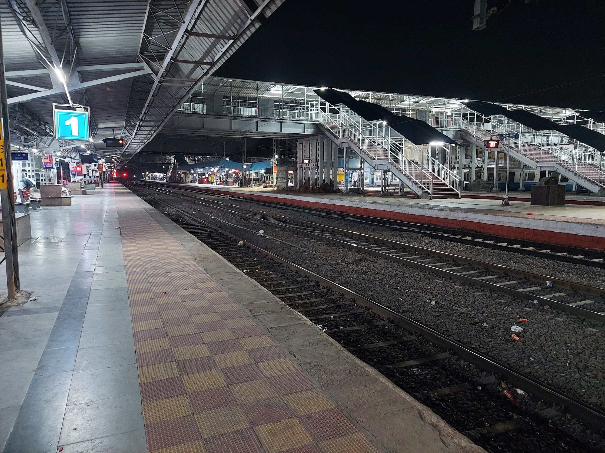

What is the problem?
When a graduating student joins a software product company as a novice engineer, one of the first tasks assigned to them is to understand the product (or a part of it) they will work on. This is a prerequisite for writing production code. Typically, the novice engineer proceeds by attempting to read the source code from the product code repository to understand the functionality and behavior and uses the partial documentation and overview information received in onboarding sessions as appropriate. However, this usually becomes a complicated and lengthy process for these engineers. Given that the company and the engineers want to get productive quickly, this creates situations where partially trained engineers hit the production floor and may create costly production issues.
To be clear, gaining mastery over the product is indeed a time-consuming task (Zhou and Mockus (2010) and Sim and Holt (1998)). We are not talking about mastery, we are talking about picking enough understanding to be able to contribute effectively to the product evolution.
Over last decade, I have hired students from campus and closely observed their struggle to comprehend software systems. While I initially attributed this to their lack of motivation to learn appropriate skills in college, I now hypothesize that the skills needed to do well at these comprehension tasks are not included or taught well in the regular computer science courses at the undergraduate level. My research examines this further.
I think this is a world-wide problem. However, my research focus is on Indian context where this shows up in an extreme form. When we lament the lack of employability and gap of skills (Aggarwal, Nithyanand, and Sharma (2020), Wheebox (2022)), and then get drawn to offering industry-tailored skills as a solution, we perpetrate the problem. My research aims to identify key changes that can be brought to curriculum and pedagogy to address this with a long-term view.
Why does this problem exist?
My research suggests that there are two key disconnects between academic world and industrial world that make it difficult for the novice engineer to be effective.
- Creation vs. comprehension skills: CS curriculum worldwide is disproportionately focused on how to construct a new piece of software. This is at odds with what an engineer is asked to do when they join (and much afterwards) - understand the existing software and evolve it. Initial creation tasks (bug fixes, small features) are also expected to be used for comprehension, as a means to understand the software better
- Simple vs. complex systems: Training for undergraduate students is limited to simple systems that they have created individually or in groups (and don’t deal with existing systems). In fact, most assignments ask them to create algorithms and programs, not build systems. On the other hand, software product companies have a large, complex system that novice engineers are expected to work on. The complexity shows up in multiple ways: the codebase is so large that reading it to understand the system is quite difficult, and the behavior of the software is not apparent from the code that they do read and understand (because in complex systems, behavior emerges from the interactions and is a run-time property).
It is no wonder they struggle at the workplace. In fact, it is a wonder that many of them do well even in their initial months.
The situation improves as they spend time with the product. Their understanding of emergent behavior improves and they also learn how to make the best use of information available (partial documentation, running system, subject matter experts, code knowledge, etc.). However, this wastes time and opportunity and the company may not be able or willing to accept this delay in getting to the expected productivity level.
What can we do about it?
There are two insights that drives the solutions we propose through our research: 1. Large software products are complex systems if we see them from a systems lens (see Allan (2009)). 2. Systems science tells us that complex systems (in many disciplines) are understood better when learners model them (see Hmelo-Silver and Azevedo (2006), Hashem and Mioduser (2013), Verhoeff, Waarlo, and Boersma (2008)). 3. Modeling can be used to understand complex software systems as well.
What is a complex software system? We define it as a system composed of two or more component systems where the behavior emerges from the interactions of these component systems. For example, a modern SaaS product architecture consists of a set of microservices - each of which demonstrate fairly simple behavior - that interact and collaborate with each other to produce the desired behavior, so we categorize SaaS products as complex software systems.
Research contribution
This research aims to produce three outputs:
- A modeling language that can be used to model complex software systems - this should be easy to learn and use by novice engineers. This is based on the notion of a transition system - we use the definition given by Tabuada (2009) which is also used in the work being done under the Algodynamics lab (Choppella, Viswanath, and Kumar (2021)).
- A learning strategy that can be used during onboarding process which allows the novice engineer to process the stream of information they get exposed to. The novice engineers can use modeling to develop their understanding of the product during this period, and refine their understanding by refining their models, as they acquire new information about the product.
- A pedagogy (and associated content) to expose the students and novice engineers to complex systems and help them learn modeling skills that aid in comprehension. This can be offered to graduating students (as part of their third-year or fourth-year course) as well as to new campus hires (as part of their onboarding process).
The long term goal is to influence the CS curriculum to teach systems thinking via multiple existing courses and help produce more systems-aware CS graduates who we expect will also be more skillful and employable in product companies.